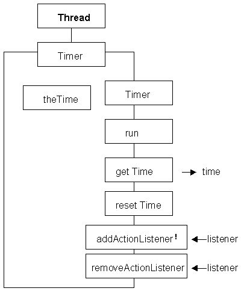

The construction of the TimerEventSource class is similar to the construction of the Timer class. Its class diagram is as follows.

This class has two additional actions called addActionListener() and removeActionListener() and an additional attribute called itsListener. This attribute and the two actions to support it can be used to infer that instances of this class are sources of ActionEvents. The addActionListener() method is used to register the destination to which the ActionEvents produced by this class are to be dispatched, the itsListener attribute stores the identity of this Object. The removeActionListener() method can be used to de-register the destination should this ever be necessary.
(The exception associated with addActionListener() indicates that this is an event unicaster. That is it can only have a single listener registered at a time. If there were no exception then it would be an event multicaster, allowing a list of destinations to be supported.)
The implementation of the itsListener attribute and of these two actions is as follows.
0009 import java.awt.event.*;
0015 private ActionListener itsListener;
0054 public void addActionListener( ActionListener listener)
0055 throws java.util.TooManyListenersException {
0056 if ( itsListener == null) {
0057 itsListener = listener;
0058 } else {
0059 throw new java.util.TooManyListenersException();
0060 } // End if.
0061 } // End addActionListener.
0062
0063
0064 public void removeActionListener( ActionListener listener) {
0065 if ( itsListener == listener) {
0066 itsListener = null;
0067 } // End if.
0068 } // End removeActionListener.
Line 0015 declares the attribute itsListener to be an instance of the ActionListener class, this will be further explained later on this page, and on the next pages. As this class is concerned with events it imports the entire java.awt.event package of classes on line 0009.
The addActionListener() method is declared indicating that it might throw an instance of the TooManyListenersException. This exception will be thrown is an attempt is made to add a listener to an instance which already has a listener registered. The method is implemented as a two way selection, if the test on line 0056 indicates that no listener is currently registered then the identity of the listener is stored in the itsListener attribute on line 0057. Otherwise, if there is already a listener registered, then the exception is thrown on line 0059.
The implementation of the removeActionListener() method will remove the listener, by setting the value of itsListener to null, only if the identity of the listener passed as an argument is equal to the identity of the registered listener in itsListener.
The only other change to the implementation of this class is in the run() method where an ActionEvent has to be constructed and dispatched to its listener, if any, every tenth of a second. The implementation of this method is as follows.
0023 public void run() {
0024 while ( true) {
0025 try {
0026 this.sleep( 100);
0027 } catch (InterruptedException exception) {
0028 // Do nothing.
0029 } // End try/ catch
0030 theTime++;
0031
0032 if ( itsListener != null) {
0033
0034 String timeString = new String(
0035 new Integer( theTime).toString());
0036
0037 ActionEvent theEvent = new ActionEvent( this,
0038 ActionEvent.ACTION_PERFORMED,
0039 timeString);
0040 itsListener.actionPerformed(theEvent);
0041 } // End if.
0042 } // end while.
0043 } // End run.
The overall structure of this action is identical to that of the previous run() action. It differs in lines 0032 to 0041 where, if a listener has been registered a new ActionEvent is constructed and passed to it. One attribute of the ActionEvent, the actionCommand attribute, will be used to contain the value of theTime; which is the number of tents of a second that have been counted. However the actionCommand attribute is a String and theTime is an int so, on lines 0034 to 0035, a String representation of the value of theTime is obtained and stored in the local String variable timeString.
Having done this a new ActionEvent is constructed on lines 0037 to 0039. The three arguments to the constructor are the identity of the Object which generated the event (this), a manifest value explaining why the event was generated (ActionEvent.ACTION_PERFORMED) and the actionCommand for the event (tmieString). Line 0040 then dispatches the event by calling the actionPerformed() method of the registered listener, itsListener.
The effect is that every tenth of a second an ActionEvent is constructed, containing the number of tenths of a second in its actionCommand attribute, and dispatched to the registered listener Object; where it will be received as an argument to a call of the listener's actionPerformed() method.